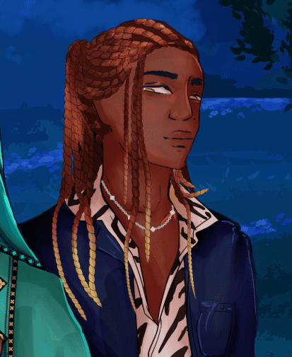
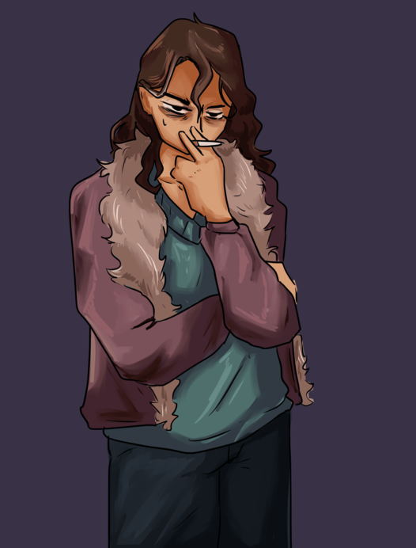

Eleni Paschalia
Eleni Paschalia
« La nature n’a rien d’un sacré insondable. Cependant, n’allez pas croire que comprendre quelque chose empêche de le craindre. C’est l’inverse à vrai dire. »
Information connue
Seconde des infants de la Héraut, Eleni est l’une des membres de la Pyramide Externe, déléguée à la représentation des Tremere d’Izmir, particulièrement auprès du Clan Toreador, où elle assure une assistance dans le Jardin.
Histoire
Eleni est introduit à la cour en 1975 en tant que ghoule, puis une seconde fois lors de son étreinte par Sophia Evangelatos en 1984. La même année, Esen Onder propose la création d'une coterie réunissant Eleni et Kejal afin de renforcer les liens entre les deux clans. Nour, une infante Lasombra, vient compléter le groupe avec la bénédiction du Primogénat. Si la coterie s'est depuis dispersée, Eleni semble avoir conservé de bonnes relations avec ses anciennes compagnes.
Sa maîtrise de la Voie Verte finit par la conduire au Jardin, où elle travaille encore aujourd'hui. Elle y étudie les plantes qui y poussent avec une curiosité qui semble dépasser la simple botanique. Elle ne parle que rarement de ce qu'elle cherche exactement. Depuis quelque temps, Eleni apparaît également davantage dans la vie sociale d'Izmir. Sa proximité avec les Toreador et son caractère chaleureux en font une présence appréciée, contribuant peu à peu à rapprocher les deux clans. Elle entretient notamment de bonnes relations avec Nafissa.
Le contrecoup de l'influence
Gabriel, qui la considère comme le visage le plus abordable des Tremere, l'a accusée d'avoir participé à son arrestation en 2013 afin de limiter son influence sur l'Université d'Izmir. Eleni n'a jamais répondu publiquement à cette accusation.
Relations
Lignée
 Sophia Evangelatos
Sophia Evangelatos- Bien que Sophia et Eleni soient toute deux dans le monde social, elles ne gravitent pas dans les memes groupes sociaux. Rien ne laisse à penser qu'elles auraient une mauvaise relation.

Kejal- A ce jour, elle travaille toujours avec Kejal, dans une relation qui semble bénéfique pour les deux partis.

Nour- Elles ne se fréquente plus beaucoup, mais si l'amitié n'a pas duré, le temps passé dans une meme coterie en fait toujours des alliés.
Trivia
- Elle a fait partie d'une coterie avec Kejal et Nour
- Elle participe à la défense active du jardin
- Malgrès sa personalité très cadré, elle est connue pour avoir toujours du retard.
- Elle maintient une petite collection de ruches